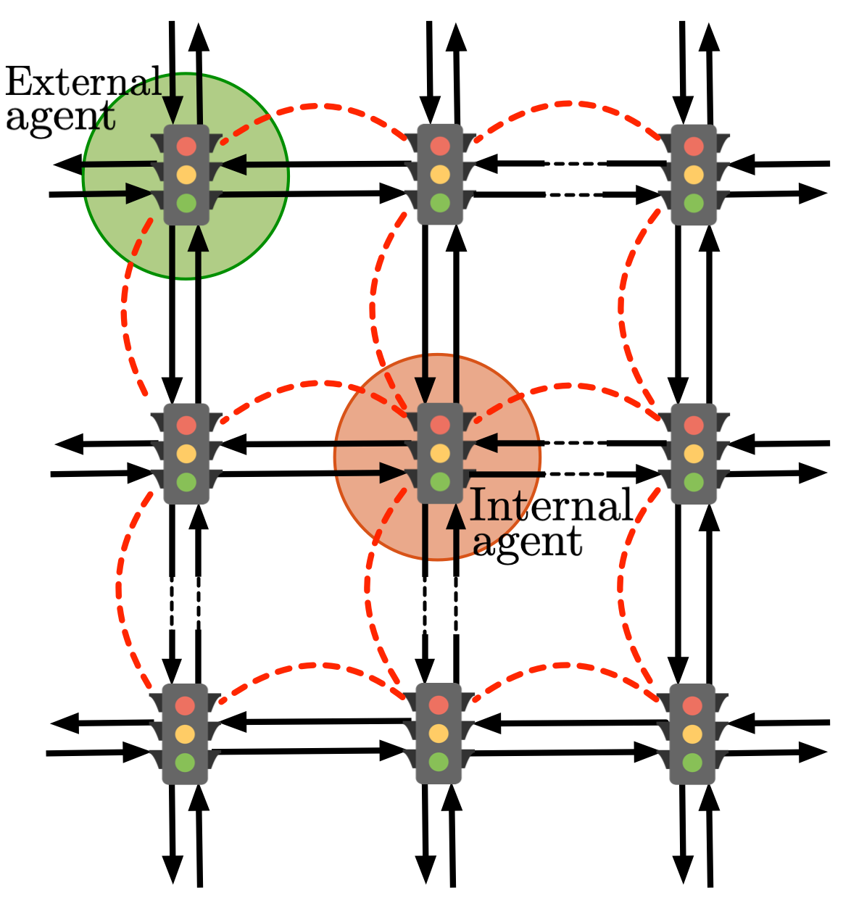

Gianluca Bianchin – Research Topics
Data-Driven Online Optimization for Dynamical Systems
 |
Online optimization methods have recently attracted significant research attention thanks to their adaptability when applied as feedback controllers for dynamical systems. When used as a controller, an online optimization method seeks to make control decisions at every time instant to minimize a loss function that is uncertain as described by the system dynamics. Because the cost resulting from a control decision is dependent on the state of the unknown dynamical system, the value of the resulting cost can be determined only after the control action is taken. Although several recent papers studied online optimization methods for the control of dynamical systems, the vast majority of the available works make a strict assumption requiring full knowledge of the underlying system dynamics. Besides their theoretical value, maintaining and refining full system models is often undesirable because perfect knowledge of the system is rarely available in practice as it requires explicit system identification. In this research, we proposed data-driven methods (i.e. that does not require any prior knowledge of the underlying dynamical system) to synthesize online-optimization controllers. Related publications: |
Control of Epidemic Outbreaks Under Hospitalization Constraints
Since the early months of 2020, non-pharmaceutical interventions (NPIs) – implemented at varying levels of severity and based on widely-divergent perspectives of risk tolerance – have been the primary means to control SARS-CoV-2 transmission. We seek to identify how risk tolerance and vaccination rates impact the rate at which a population can return to pre-pandemic contact behavior. To this end, we develop a novel feedback control method for data-driven decision-making to identify optimal levels of NPIs across geographical regions in order to guarantee that hospitalizations will not exceed a given risk tolerance. Results are shown for the state of Colorado, and they suggest that: coordination in decision-making across regions is essential to maintain the daily number of hospitalizations below the desired limits; increasing risk tolerance can decrease the number of days required to discontinue NPIs, at the cost of an increased number of deaths; and if vaccination uptake is less than 70%, at most levels of risk tolerance, return to pre-pandemic contact behaviors before the early months of 2022 may newly jeopardize the heathcare system. Related publications: |
Control and Robustness of Traffic Networks
|  | Traffic networks are fundamental components of modern societies, making economic activity possible by enabling the transfer of passengers, goods, and services in a timely and reliable fashion. Despite their economical importance, traffic networks are impaired by the outstanding problem of traffic congestion, which causes the waste of over 3 billions of gallons of fuel each year in the United States. In a first line of research, we have studied what is the system-level impact of routing apps (such as Google Maps, Inrix, Waze, etc.). Our works demonstrate for the first time the existence of oscillatory trajectories due to the general adoption of these systems, which demonstrate how drivers continuously switch between highways in the attempt of minimizing their travel time to destination. In a second line of research, we have studied the problem of optimizing network-wide congestion by controlling automated traffic lights. Related publications: |
Secure Navigation of Robots
 |
Mobile robots have been used in a broad range of civilian and military operations thanks to their autonomous capabilities, flexibility, and wide range of engineering applications. Autonomous robots rely on sensors to measure their states and use this information to make decisions and to generate control commands to send to their actuators. Despite the tremendous advances in the development of more reliable sensing and communication devices, sensory data and communication channels can be accidentally and maliciously compromised, thus undermining the effectiveness of autonomous operations in critical and adversarial applications. In this project, we have studied the competing objectives of an attacker and of a trajectory planner: where the attacker aims at minimizing the deviation between the nominal and attacked trajectory, while the trajectory planner seeks for nominal controls to guarantee detectability of attacks. Related publications: |